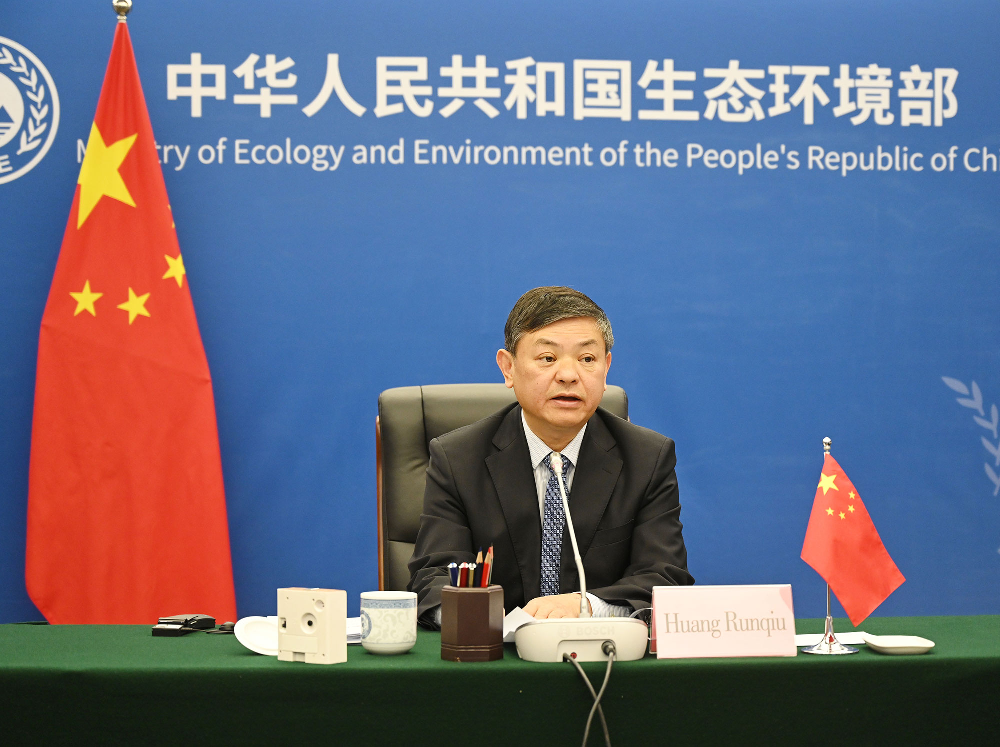

您当前的位置：首页 > 新闻
生态环境部部长出席“77国集团和中国”气候变化部长级会议
发布时间：2020-10-29来源：生态环境部
10月29日，“77国集团和中国”（以下简称“G77+中国”）气候变化部长级会议以视频方式召开，会议主题为“后疫情时代保持通向2030年可持续发展议程的低碳发展路径”。“G77+中国”主席国圭亚那总统伊尔法恩·阿里、联合国秘书长古特雷斯在线致辞。生态环境部部长黄润秋应邀出席会议并讲话。

黄润秋指出，突如其来的新冠肺炎疫情启示我们，面对气候变化等全球性危机和挑战，人类是命运共同体，只有坚持人与自然和谐共生，坚持绿色低碳发展，坚持全球合作应对气候变化，才能实现可持续发展的未来。
黄润秋表示，习近平主席在第七十五届联合国大会一般性辩论上郑重宣布了中国新的二氧化碳排放达峰目标与碳中和愿景，这一重要宣示体现了中国积极应对气候变化、走绿色低碳发展道路、推动构建人类命运共同体的坚定决心。中国作为世界上最大的发展中国家，一以贯之高度重视应对气候变化工作。截至2019年底，中国单位GDP二氧化碳排放和非化石能源占比两项指标，均提前超额完成此前承诺的2020年目标。中国将继续坚定不移实施积极应对气候变化国家战略，以更大力度推进应对气候变化工作，加快推动能源结构低碳转型，推进低碳工业体系、低碳交通、低碳建筑发展，加快全国碳市场建设，开展二氧化碳排放达峰行动，不断提升适应气候变化能力。
黄润秋强调，发展中国家是受气候变化不利影响最严重的群体，也是应对气候变化最坚定和最重要的力量。“G77+中国”是最重要的发展中国家集团，应共同推进全球气候治理体系向更加公平合理、合作共赢的方向迈进。要维护《联合国气候变化框架公约》作为全球气候治理基石的重要地位，坚持共同但有区别的责任原则。发达国家要切实承担减排责任和出资义务。要呼吁各方切实考虑发展中国家面临的现实困难，为发展中国家开展应对气候变化行动提供充足的资金、技术和能力建设支持。
黄润秋表示，中方将始终致力于维护发展中国家团结，坚定不移支持“G77+中国”紧密协调合作，持续推进应对气候变化南南合作和绿色“一带一路”建设，与各发展中国家伙伴一道，共同推进绿色、韧性、可持续复苏，推动《巴黎协定》全面、有效、持续实施。
会议还发布了主席公报。
生态环境部气候司、国际司有关负责同志在线参会。